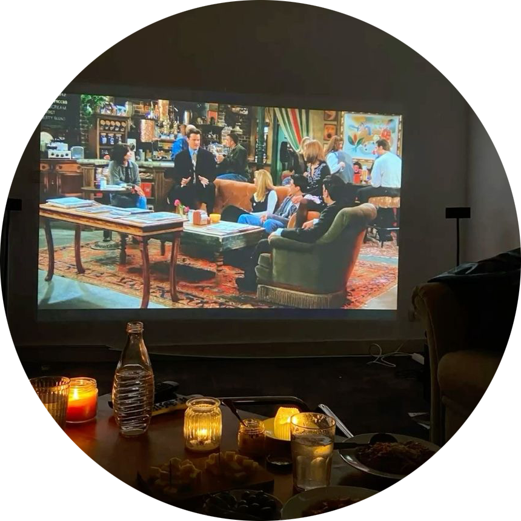

| Umenie | Vzdelanie | Šport | Zábava | Domácnosť | Zdravotníctvo |
|
 |
Počítačové hry
Médiá |
|
 Disney plus
Disney plus |
 Youtube
Youtube |
 Books
Books |
 Spotify
Spotify |
Mobilné hry |
ZDROJE: https://sk.wikipedia.org/wiki/Počítačová_hra